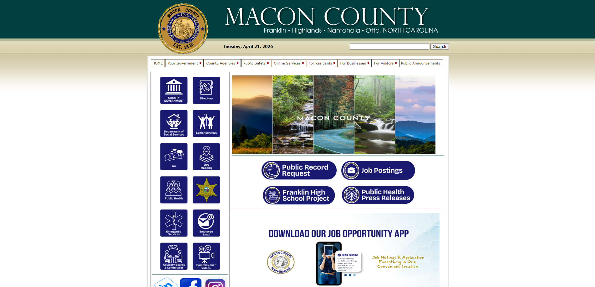
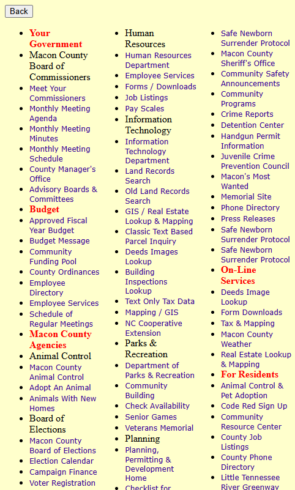
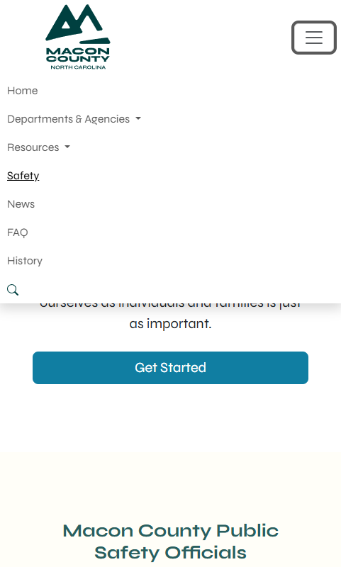
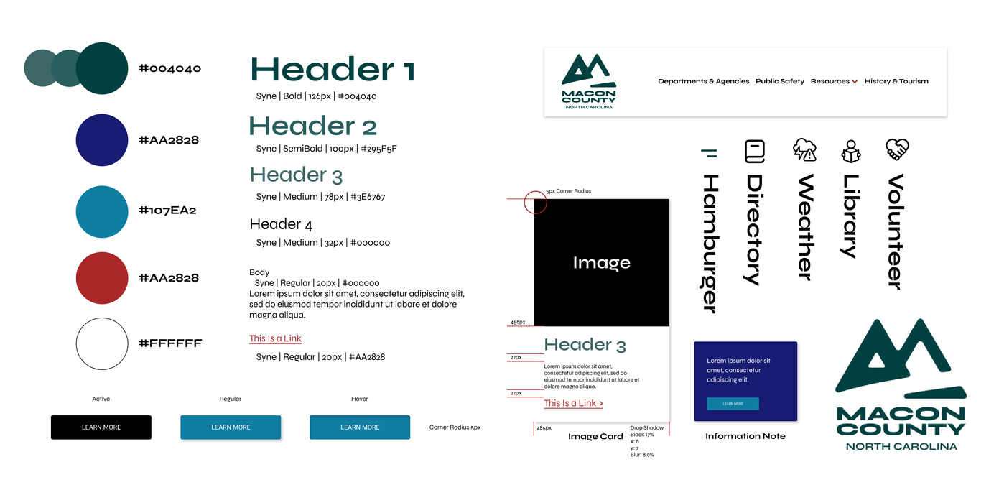

Macon County Case Study

Macon County
Case Study Details
Macon County - Website Redesign
My Role: Designer, Developer & Researcher
Tools used: Bootstrap5, HTML/CSS, JavaScript
For this project, I audited the Macon County government website and put
together a full usability report with real, actionable recommendations. I looked
at everything from how people move through the site to whether the content was
actually readable, and found quite a few places where small changes could make a
meaningful difference.


Macon County
Project Background
The Situation: The Macon County site had the bones of something useful, but the outdated site just wasn't easy to use. At first glance, the website's images and navigation were unoptimized and distracting, the text was often hard to read, and the website struggled with gaining a mobile audience. These factors decreased overall usability and traffic to the site. Macon County needed a clear path forward to make the site more user-friendly and accessible to all residents.


Macon County
Task & Observations
Knowing that I had a short timeframe to complete this project, I tasked myself to create a website audit to showcase painpoints and opportunities for improvement. I found that users were often overwhelmed by the sheer amount of information of the navigation bar, and discovered that various pages could be simplified down into a more visual, single-page experience. The mobile site, which was a large block of links, ended up needing an overhaul in order to reach the large portion of users who access the site on their phones.

Macon County
Action Plan
Macon county provided me with specific details on the outcomes they wanted from the redesign, which I used as a starting point for my recommendations. Since Macon County serves a wide range of users who often come to the site for goverment information, I suggested simplifying the navigation and making it more intuitive, and creating a visually uniform experience that could direct users to the answers they might be looking for. Proper branding was created with a custom stylesheet for the site. Contact information was spread across every page, along with helpful Q&A sections.

Macon County
Results
After iterations, user-testing, and open communication with the client to keep the project consistent, the finalized redesigned website was able to successfully direct less traffic to their phoneline with the helpful usage of Q&A sections. The new website design served as a strong base for Macon County to continue building on. The issues found in the website audit was able to be used as a roadmap for future improvements.